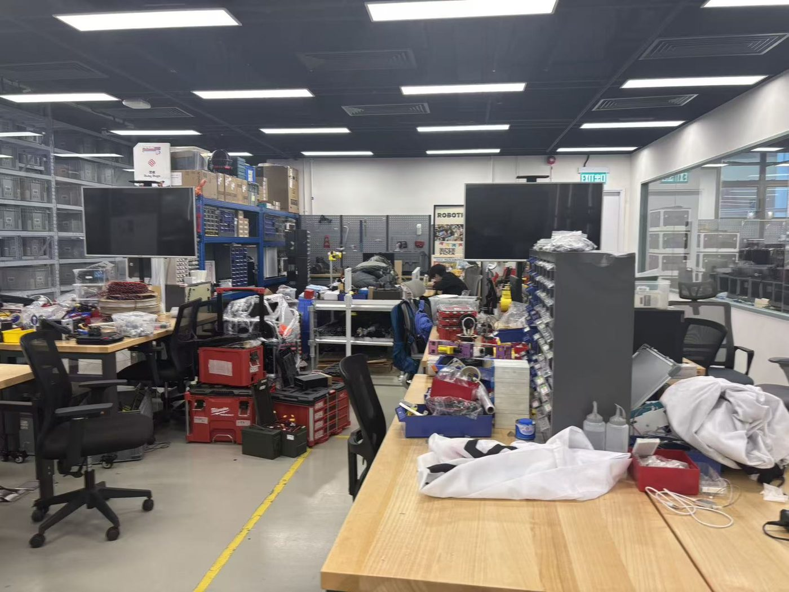
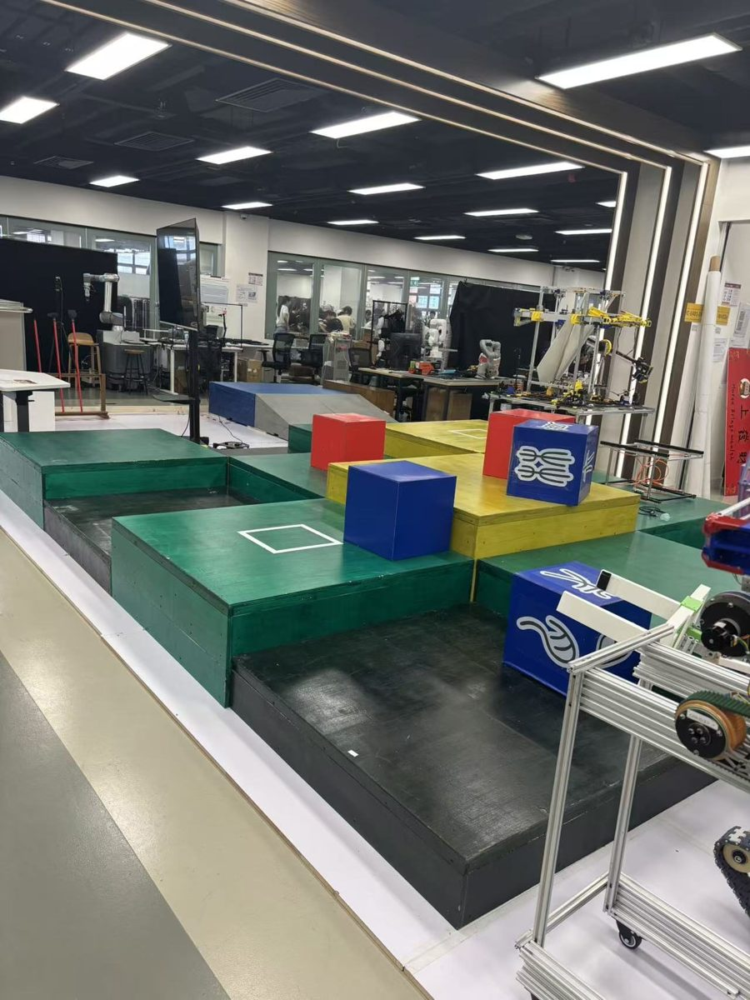
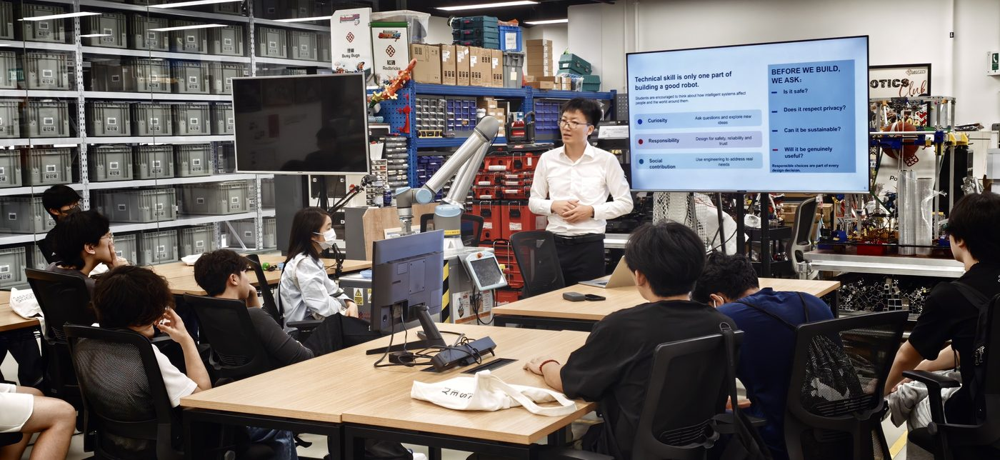

PolyU FENG AI & Robotics Club
About
Our vision, how we work and who guides us
The PolyU FENG AI & Robotics Club is a student engineering community supported by the Faculty of Engineering (FENG) of The Hong Kong Polytechnic University. Members from across PolyU design, build and test real robots, from autonomous drones and robot dogs to unmanned ground vehicles and competition robots, and learn how mechanical design, electronics, perception and AI come together in one working system.
Our vision
To build a world-class robotics club, first in Hong Kong, then in Asia and the world, and to cultivate outstanding students who can take a real problem all the way to a working, reliable robot. Through our efforts in robotics, we want to make a difference, with trustworthy robotic systems that people can not only use, but also trust.
Making a difference. We do robotics because robots can change how people live and work: inspecting buildings so workers stay safe, delivering goods in a crowded city, guiding a visually impaired person across campus. Every project should start from a real need and leave something useful behind.
Trustworthy robots. A robot that works once in a demo is not enough. People will only rely on a robot if it is safe, keeps working when conditions change, and is honest about what it can and cannot do. That is why members learn to test under real conditions, measure uncertainty, plan for failure and report results truthfully. This shares the vision of the Trustworthy AI and Autonomous Systems Laboratory (TAS Lab) at PolyU, whose postdocs and PhD students mentor the club.
We measure ourselves by our students. A club member should be able to define a problem, design across mechanics, electronics, sensing and software, build and test under real deadlines, and explain the result honestly. Our motto, from the club's founding plan, is to make robots that contribute to society, and to become engineers who contribute to society.
Our mission
- Identify and develop talented students through rigorous hands-on training, interdisciplinary teamwork and high-level competition.
- Give every member close guidance from Faculty of Engineering staff, Industrial Centre engineers and PhD-level mentors.
- Prepare the strongest members for research, including undergraduate research and future MPhil or PhD study, and for demanding careers in robotics, AI, autonomous vehicles, logistics automation and aerospace.
- Build robotic technologies with educational, scientific and social value, and pass every design, line of code and lesson on to the next cohort.
A demanding, high-intensity club
We hold members to the standard of the world's leading university robotics teams, such as those at MIT and Stanford: regular weekly hours, firm deadlines, design reviews, and robots that must work on real hardware, not only on slides. Expect to be stretched. Come prepared to commit real time and effort; members who do will see real results.
What you gain by joining
The club asks a lot of its members, and gives a lot back. Members who keep their commitment can expect:
World-leading technology
Hands-on work with the AI and robotics technology used in top labs today: autonomous drones, legged robots, embodied AI, deep learning and reinforcement learning.
Real industry needs
Projects start from current problems brought by companies in construction, logistics, transport and robotics, so you learn what industry needs now.
First-class mentorship
Guidance from PolyU professors, Industrial Centre engineers, PhD-level mentors and an External Advisory Board of leading robotics professors.
Industry connections
Company visits, talks, internships and direct contact with partner companies, giving you visibility in the job market before you graduate.
A route to a PhD
Outstanding members with a strong GPA can be recommended for PhD study at PolyU, at other leading universities, or in the labs of our External Advisory Board members.
Competition and exchange
Represent PolyU at Robocon and other international competitions, and meet teams and researchers from across Asia and beyond.
A typical path through the club
- Year 1Join and learnEnter as a Tier 3 member. Build foundations in AI, programming and robotics through training and the learning roadmap, and contribute to your technical group.
- Year 2Train and buildPromoted to Tier 2 on review. Structured bi-weekly training and a place on a project or competition team.
- Year 3Compete and leadRepresent PolyU at Robocon and other international competitions. Tier 1 members lead teams and mentor others.
- Year 4Launch your next stepIndustry internships and job offers, recommendation for PhD study, and exchange opportunities.
A path for a committed member. Promotion depends on reviews of skill, contribution and commitment, not on year of study, and recommendations are earned, not guaranteed.
International and industry exchange
A world-class club has to measure itself against the best teams outside PolyU.
- International competition. The Robocon 2027 project enters the Hong Kong contest, the route to ABU Robocon 2027 in Solo, Indonesia, and a RoboCup China Open 2028 project has started. Through these events members meet and compete with university teams from across Asia.
- Learning from leading teams. Members study how top teams in Robocon and DJI RoboMaster, such as CUHK, HKUST, HKU, Tsinghua University and Shanghai Jiao Tong University, organise training, engineering and knowledge transfer, and follow student clubs at MIT, CMU, Stanford, ETH Zurich and NUS. See the world's leading robotics clubs.
- Industry partners. Companies in legged robots, embodied AI, autonomous logistics and intelligent transport give members access to real robot platforms, problems from industry, mentoring, company visits and internship routes.
- Visits and outreach. Company visits, talks and public showcases, such as the PolyU Student Orientation, connect members with engineers and the wider community.
Leadership and supervision
The Director of the Robotics Club is Prof. Weisong Wen of the Department of Aeronautical and Aviation Engineering. Professor Wen provides the club's strategic direction and coordinates its programme.
Staff-level supervisors from AAE, EEE and ME advise on technical direction, and Dr. LEE Kam-pui Jonathan, Engineering Manager at the PolyU Industrial Centre, is the club's Coach Advisor for hands-on engineering, fabrication and workspace use. An External Advisory Board of robotics professors from Zhejiang University, the Southern University of Science and Technology, Shandong University, the University of Macau and Northeastern University gives guidance, direction and seminars. A PhD-level mentor team works with students week to week. See the Team page.
Four technical groups
Every member belongs to one technical group. Project teams draw members from several groups, so each robot is built by people with complementary skills. Click a group for its details, requirements and photos.

Mechanical Design
The robot's body: frames, legs, mechanisms and drive trains, from CAD to parts made in the Industrial Centre.
Details, requirements and photos
Electronics & Embedded Systems
The robot's nervous system: power, circuit boards, motor drivers and microcontroller firmware.
Details, requirements and photos
Perception & Sensors
The robot's senses: cameras, LiDAR, GNSS and IMU turned into positions, maps and detected objects.
Details, requirements and photos
Software & AI
The robot's brain: ROS 2 software, control, planning, computer vision and reinforcement learning.
Details, requirements and photosWhere we work
Club projects are built in the PolyU Industrial Centre, which provides workbenches, a practice field, tools and machines, and engineers who supervise fabrication and safety.
All space is shared and must be booked. Space in the Industrial Centre is limited, and the club shares workbenches, the practice field, machines and meeting rooms with other users. Teams book a time slot in advance through the club before using any space or machine, and leave it clean and ready for the next team. Bookings that are not used are released. Follow the booking rules strictly. Using space or machines without a booking, overrunning your slot or leaving the space untidy counts as a rule violation, and repeated violations lead to removal from the club.



Three member tiers
Every member joins through the same application, written test and interview and is placed into a tier. Tiers reflect current skill and commitment, not seniority, and are reviewed regularly.
- Tier 3 · General Memberabout 80 places
- Interested students, including beginners. Seminars, salons, company visits, introductory workshops and open club activities. No external competition representation.
- Tier 2 · Training Memberabout 30 places
- Members with foundational knowledge and reliable participation. Structured bi-weekly training and supervised hands-on work. Can form or join project and competition teams.
- Tier 1 · Advanced Memberabout 15 places
- Technically strong and highly committed members. Lead project and competition teams, write proposals, mentor junior members and represent PolyU when selected.
- Seminars and company visits
- Introductory workshops
- Open club activities
- Bi-weekly structured training
- Supervised hands-on work
- Join project and competition teams
- Lead teams and write proposals
- Mentor junior members
- Represent PolyU in competitions
Commitment and club rules
- Keep your commitment. At the interview you agree how much time you will give to the club. We expect you to keep it. Members who repeatedly fall short will be advised to leave the club.
- Follow the club rules, always. Every member completes safety training and signs the club's safety, equipment and membership rules before working in the Industrial Centre. A first violation brings a written warning and retraining; a second violation means removal from the club. A single serious breach can lead to immediate removal.
- Book all space and keep to your booking. Workbenches, the practice field and machines are shared and must be booked in advance. Follow the booking rules strictly: repeated booking violations lead to removal from the club.
See how to join or read the Q&A. For anything else, email airoboticsclubpolyu@gmail.com and copy Prof. Weisong Wen at welson.wen@polyu.edu.hk.